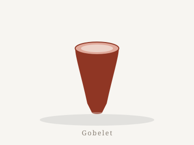
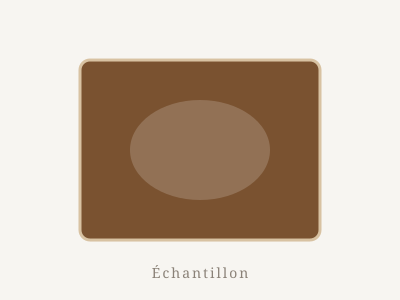
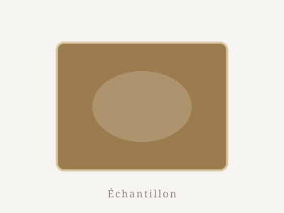
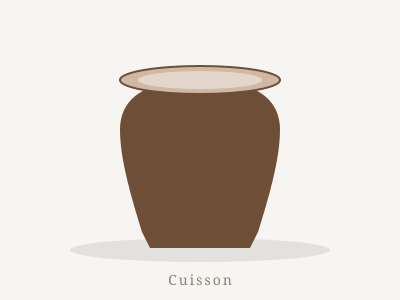
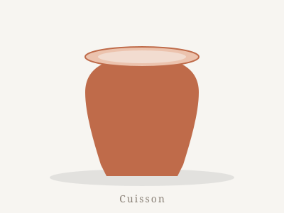
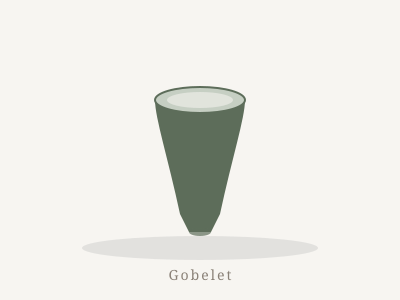
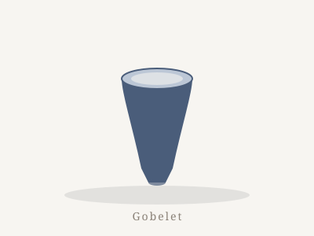
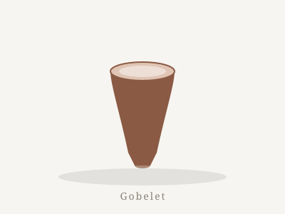
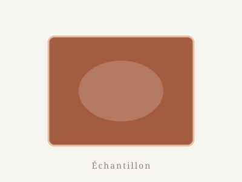
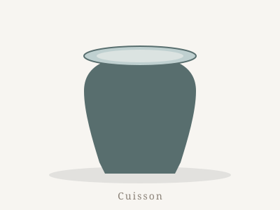

L'atelier en images
Galerie
Gobelets, essais d'émaux et cuissons. Les photos de l'atelier sont régulièrement partagées sur Instagram — la galerie sera bientôt alimentée par les dernières pièces.









